Claude 在权重空间里给机器人编程
不用梯度，不训练。Claude 改了驱动机器人的模型 π0.5 里的一个矩阵，50 个 RoboCasa 任务的成功率从 51.9% 升到 65.1%。
实验设置
改变神经网络的常规办法是训练：定一个损失，跑梯度下降，让权重自己动。MIT 的博客 Sparks of Weight-Space Programming（Takehi 等，2026；博客，未经同行评审）试了另一条路：让 GPT-6 Astra 直接读写权重。在其中一个实验里，它只改了一个小语言模型 0.016% 的权重，就把 MATH-500 的成绩从 7.9% 提到 48.1%。我们想知道，这套做法能不能用到驱动机器人的模型上，于是让 Claude Opus 5.5 来试。
模型是 π0.5，来自 Physical Intelligence 的 VLA 模型。它接收相机图像、机器人状态和一句文字指令，用 flow matching 输出一段 50 步的 action chunk。我们用的是 RoboCasa 团队公开的权重 pi05_pretrain_human300，转成 PyTorch 版，在 RoboCasa 的仿真厨房里跑，设置和官方评测脚本一致。规则很简单：
- Claude 可以改 π0.5 的权重，也可以改模型前后的处理过程。
- 不用梯度下降，不训练。
- 每个改动都跑闭环，用同样的任务和种子和未改的模型比。
Claude 是通过写代码来改权重的：加载张量，读激活，算出改动，写回新的矩阵，再跑闭环检验。目标和规则由人来定，人也会中途质疑结果。看什么、写分析代码、跑实验、选改动，都是 Claude 做的。
改前和改后
“Pick the mug from under the coffee machine dispenser and place it on the counter.”
同一任务、同一初始状态，只改了一个矩阵。左边是改前，右边是改后。主画面是模型的左相机，角上是手腕相机，3 倍速。片段是用录像存的仿真状态重新渲染的高清版，并且和原始录像核对过。
这些片段不是随机抽的。选法是：只看初始仿真状态逐位相同的配对，每个任务取局号最小的一局，要求改前失败、改后成功。全部 1000 对里，这种翻转出现了 219 次；反过来的翻转出现了 87 次，上面最后几段就是。
同一对局在相同时刻的画面

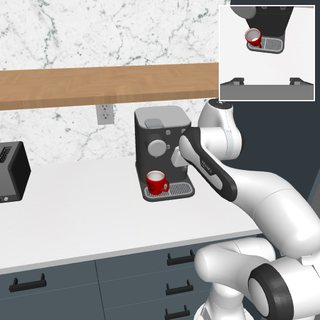
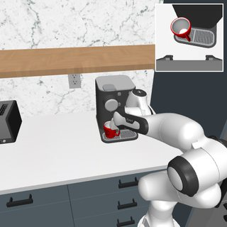
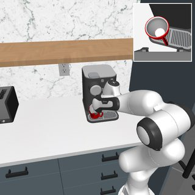
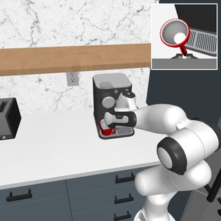
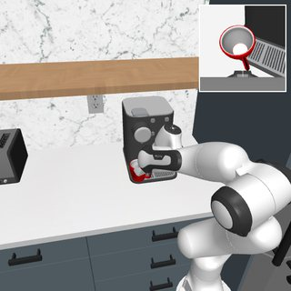
改后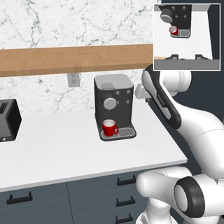
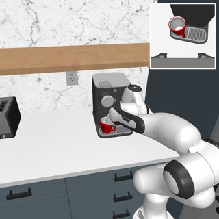
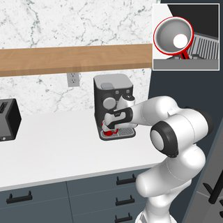
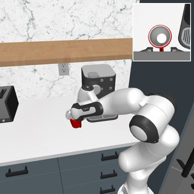

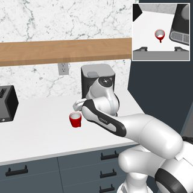
Claude 是怎么找到的
过程并不顺利。Claude 先照 MIT 的做法试，失败了。这个改动最后修好的，是 π0.5 训练时看到的图和评测时看到的图之间的一处不一致。
1. 没有单一的故障可修
Claude 先看了早先普查留下的 1478 局 π0.5 录像，其中 741 局成功。失败分六类，最大的一类占 24%。启发我们的 MIT 实验里，一种故障占了 93% 的回答，所以一个方向就能修好。这里没有这样的大头。
2. 计划的开头很慢
录像里存的 action chunk 倒是有规律。在闭环状态上，计划的前 5 步每步平移 0.242，第 20–35 步是 0.448。π0.5 每 5 步重规划一次，所以每次只执行计划里最慢的那一段。
3. MIT 的配方在这里没用
Claude 接着照 MIT 的做法试：在 action expert 里找一个区分好坏行为的方向，然后消掉。"卡住 vs 在动"等 24 个候选方向，开头速度都还是原来的 1.00 倍，最多差 3%。消"失败 − 成功"方向跑闭环，80 局里成功数从 20 变成 24（p = 0.29）。
4. 一次意外
录像里的图是 JPEG 存的。Claude 为了核对自己的管线，用这些图和同样的噪声重算动作，结果和录像里存的动作差了约三分之一，开头还变快了。换成无损 PNG 录像再算，结果逐位相同。所以管线没问题，是模型对 JPEG 压缩反应很大。
5. 同一状态、同一噪声、两张图
这引出了一个更好的问题。π0.5 是用视频训练的，官方数据集是 H.264（x264 CRF 23，yuv420p）。评测时喂的却是没压缩的渲染图，官方脚本和我们的都是这样。于是 Claude 从训练示教里恢复仿真状态，重新渲染，再和同一状态的训练视频帧比。两张图的 PSNR 约 40 dB。你可以在这里自己比一比：
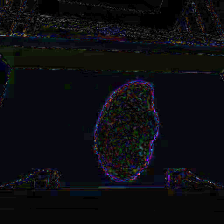
模型对这两种图的反应却很不一样。图 1 是同一状态、同一噪声下的计划速度。喂训练帧时，开头速度和人的示教接近；喂渲染图时开头慢了约三分之一，到后面才追上来。而机器人只执行开头，所以一直在慢速段。最早的核对是 6 个任务 70 个状态，开头速度分别是：人 0.541，训练帧 0.542，渲染图 0.356。
图 1. 喂清晰的渲染图，模型把开头规划得很慢。改动把它拉了回来。
看具体数字
| 步 | 0–5 | 5–10 | 10–20 | 20–35 | 35–50 |
|---|---|---|---|---|---|
| 人的示教 | 0.644 | 0.641 | 0.608 | 0.562 | 0.587 |
| 训练视频帧 | 0.585 | 0.580 | 0.581 | 0.564 | 0.576 |
| 渲染图，改前 | 0.377 | 0.438 | 0.504 | 0.530 | 0.548 |
| 渲染图，改后 | 0.576 | 0.572 | 0.578 | 0.562 | 0.568 |
6. 敏感的是清晰度，不是噪声
加 σ = 3 的白噪声，像素平均变 2.39，动作只变 0.011。σ = 0.8 的模糊，像素变化差不多（2.68），动作却变 0.081。开头速度随模糊单调上升：0.242、0.342（σ = 0.5）、0.540（σ = 0.8）、0.607（σ = 1.2）。手腕相机影响最大：只把这一路换成训练帧，速度从 0.356 到 0.507；只换右相机是 0.407，只换左相机是 0.370。
在 token 空间里，一个方向就像旋钮。沿"渲染图 − 训练帧"的平均差异方向推投影层的偏置，开头速度可以从 0.226 平滑地变到 0.647。图像在这个方向上的取值，正好按清晰度排开（手腕相机）：加白噪声 36.1，渲染原图 35.9，JPEG95 33.0，JPEG90 26.9，模糊 0.6 25.7，训练帧 22.1，模糊 0.8 20.3，JPEG50 7.5。
7. 从图像现象到权重改动
SigLIP 的 patch embedding 是线性的，乘一个高斯核就等于给每个图像块做模糊。这是第一个改动：16 个练习任务的成功数从 45 / 160 升到 73 / 160。之后 Claude 扩大了搜索，练习局一共 4480 局，包括网络各个阶段的权重改动、处理过程的改动，以及两者的组合。
越靠近图像，效果越强。80 局里未改模型成功 20 局，投影层的改动到 39–42，SigLIP 最后一层到 31，骨干第 12 层到 28（p = 0.057）。action expert 里的改动停在 23–24，在噪声范围内。在修复之上再叠加别的改动，比如增加去噪步数、调注意力偏置，都没有超出噪声的提升，还有几个变差了。这只代表我们试过的改法，不能证明 action expert 改不动。
具体改了什么
投影层把 SigLIP 的 token 映射进骨干：y = W x + b。这个改动从它的输入里消掉三个方向，偏置不动：
# 代码
W = W - (W @ V) @ V.T
V 来自数据，没有用梯度：
- 从 27 个任务的训练示教里取 254 个仿真状态，这些任务和留出的 10 个测试任务不重叠。
- 每个状态取两张图：重新渲染的图，和解码出来的训练帧。三路相机，每张图 256 个 token，共 195,072 对 token。
- 每对 token 在 SigLIP 的
post_layernorm之后相减，算差向量的二阶矩矩阵，取最大的 3 个特征向量。
在另外 27 个任务的 305 个状态上，开头速度从 0.377 回到 0.576，喂训练帧是 0.585。和喂训练帧时计划动作的差，从 0.053 降到 0.025。三个方向已经接近饱和：两个方向是 0.529，五个方向是 0.580。
矩阵的大部分行为都保留了下来。最大奇异值还是 14.93，随机方向的增益保留 99.8%（中位数）；选中的三个方向，增益从约 1.9 降到 0.002。但这个改动并非没有代价：这些方向也占训练帧 token 能量的 27%，渲染图和训练帧的 token 距离也只缩小了 19%。对模型来说，两种图并没有变成一样。
方向是关键。同一个矩阵，范数变化相同（8.2%），换成增益匹配的三个随机方向，速度是 0.377 和 0.376，和不改一样。换成 token 能量最大的三个方向，模型直接坏掉（0.077）。闭环上，80 个练习局里未改模型成功 20 局，随机方向 18 局，能量最大的方向 0 局，这个改动 39 局。
改得最多的地方，不是起作用的地方。W 的第 725 列占这次改动 18.1% 的能量，相对变化 133%，第 725 维也是渲染图和训练帧平均差异最大的一维。我们以为它是关键，结果不是：这一列置零是 0.382，反号是 0.414，能量最大的 5 列置零（范数变 7.6%）是 0.385，随机列是 0.377。三个方向里到底哪部分起作用，现在还不知道。
完整结果
图 2. 每个任务的成功局数，各 20 对局
提升并不均匀。下面的分组是看完结果才分的，只算描述：取放类从 56.5% 到 78.5%，按键和旋钮类从 37.1% 到 43.6%，其余从 58.3% 到 70.7%。OpenOven 基本还是 0。官方 Atomic-Seen 的 18 个任务从 51.9% 到 65.8%。
用任务估计方向，看起来没有抬高提升幅度。参与估计的 19 个任务从 56.1% 到 64.7%；估计方向、离线评估和练习都没用过的 12 个任务从 47.1% 到 64.6%。
不是每一对都完全相同。1000 对里有 924 对的两局从逐位相同的仿真状态开始。少数任务（主要是水壶、水槽、立式搅拌机）的环境生成没有被种子完全决定。只看这 924 对：51.0% → 64.0%（+200 / −80，p ≈ 5×10⁻¹³）。
测试集。跑这 1000 局新种子之前，我们先在测试集上跑了三个候选各一次，过线规则事先写好：22 个任务 × 30 局。未改模型 35.2%，patch embedding 模糊 49.2%，五个方向 52.3%，三个方向 53.8%。在之前所有环节都没用过的 10 个留出任务上，三个方向从 47.7% 到 68.0%。三个候选都过线。
三个方向的改动并不比模糊好。它在测试集上的领先多半是挑选效应。新种子上两者打平：440 局里 225 和 224（互相比较 +52 / −51）。区别在改动大小：模糊把 patch embedding 的范数改了 44%，这个改动把投影层改了 8.1%。
基线有问题吗？
一个小改动带来 13 个百分点，换谁都会先怀疑设置，所以我们查了。
- 官方评测脚本喂的也是没压缩的渲染图，官方数据集是视频。这个差异是官方流程本身带来的，不是我们引入的。
- 重规划、时长、状态格式、动作转换都和官方脚本一致。在 3 个任务上，同一仿真状态下，我们闭环里的状态和训练数据逐位相同。
- 我们还直接跑了官方评测栈：JAX 权重、
serve_policy、官方客户端的eval_env，target split，8 个任务 × 20 局。官方 55/160（34.4%），我们的基线 59/160（36.9%）。差 −2.5 个百分点，95% CI 约 −13 到 +8，所以只能排除很大的偏差。
有一个第三方榜单写 π0.5 在 Atomic-Seen 上是 39.6%，我们的基线在同样 18 个任务上是 51.9%。这个差距我们解释不了，那个榜单没有写设置和局数。请不要直接比这两个数。
这对"改权重"意味着什么
它说明了什么
语言模型可以直接改一个训练好的机器人策略，并且让它在闭环里变好，不用梯度下降，也不用训练。整个改动就是三个向量加一行线性代数，任何人都能读它、用哈希核对它、把它撤销。在没有参与选改动的种子和任务上，它依然成立。
它没有说明什么
- Claude 不是靠读权重找到修法的。线索来自对比训练和部署的图像。读 action expert、照 MIT 配方改，都没找到东西。这个配方依赖的"失败 − 成功"这类对比，和这个方向的余弦都在 ±0.11 以内（在 JPEG 录像上量的）。闭环里每帧都一样清晰，所以这个差别不会出现在失败和成功之间。权重是写下修法的地方，不是发现它的地方。
- 在这里，改权重并没有胜过更简单的办法。完全不改权重，在闭环里把画面过一遍 x264，效果差不多：160 个练习局里成功 70 局，模糊改动是 73 局，原来是 45 局（两者之间 p = 0.74）。权重版只是省去了改输入管线。
- 只让动作变快不够。跳过每块前 5 步：45 → 50 / 160（p = 0.51）。动作增益 1.3：20 → 23 / 80，叠加在五个方向的改动上，还从 42 掉到 30（p = 0.012）。
- 解释只是猜测。单张图和机器人状态里没有速度信息，模型可能学会了从压缩造成的软判断运动。闭环的图总是很清晰，它就会总以为自己静止，于是把开头规划得慢。证据是：训练帧上这个方向和人的速度相关（左、手腕、右相机 r = −0.24、−0.34、−0.28），同一状态的渲染图上几乎不相关（−0.05、−0.03、−0.08）。相关性只是中等，要直接验证得重新训练。
- 覆盖范围有限。这是 50 个短任务：官方 Atomic-Seen 的 18 个加我们另选的 32 个，不是官方的
target50，其中 32 个 composite 任务没测。有 11 个任务下降了，不过每任务只有 20 局，其中一部分可能是噪声。 - 只在仿真里，只有一次。没有上过真机。这是一个模型的一次调试，也没有同样 rollout 预算下的微调做对照。
- 已有工作。我们查了三轮，没找到直接报告这个图像现象的工作，但搜索不算穷尽。如果你知道，请告诉我们。
想听听大家的看法
- 语言模型能修好那些不是输入不一致造成的、预处理够不到的故障吗？我们在 action expert 里试过的改动都失败了，但只试了少数几种。
- 什么时候改权重比微调更合适？在同样的 rollout 预算下，怎么公平地比较两者？
- 智能体做的改动该怎么审查？这个改动动了 225 万个数，219 局变好的同时也有 87 局变差。上真机之前，多少证据才算够？
如果你的训练数据也是视频
LeRobot 格式的数据集普遍存成视频，所以别的项目也可能有同样的差异。我们只测过一个模型和一个数据集，不知道这有多普遍。检查起来不难：
- 从训练数据里取几个状态，在仿真里恢复，按评测时的方式渲染。
- 用同样的噪声，分别喂渲染图和解码出来的训练帧。
- 比较计划开头的几步动作。如果差异明显大于同样像素幅度的白噪声造成的差异，就试试在闭环里重新编码画面，再量成功率。
数据和代码
全部放在 GitHub 仓库里：
edit/：确切的改动、应用它的脚本，以及用来核对的 SHA-256 前缀（改前c3c6ae81d4fa4956，改后102128668f8b1ba5）。results/：新种子和测试集的逐局结果、每一次练习、官方栈核对和离线对照。code/：主要步骤的脚本。estimate_directions.py能重算出这三个方向（和公开的改动余弦为 1.000000）。闭环框架没有放进来，要复现主要数字需要你自己的闭环。
引用
如果要引用这篇文章，请使用以下格式：
Ke Sun. “Claude Programs a Robot in Weight Space.” Blog post, November 2026. https://skjack.github.io/claude-weight-space-pi05/
@misc{sun2026claude,
author = {Ke Sun},
title = {Claude Programs a Robot in Weight Space},
year = {2026},
month = nov,
howpublished = {\url{https://skjack.github.io/claude-weight-space-pi05/}},
note = {Blog post}
}